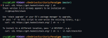
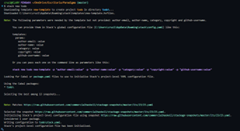
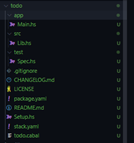
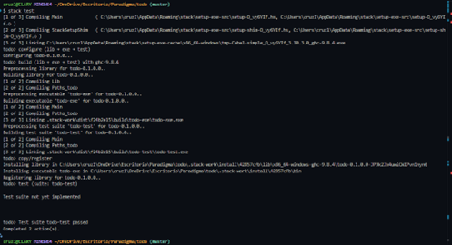
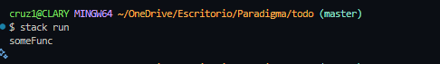
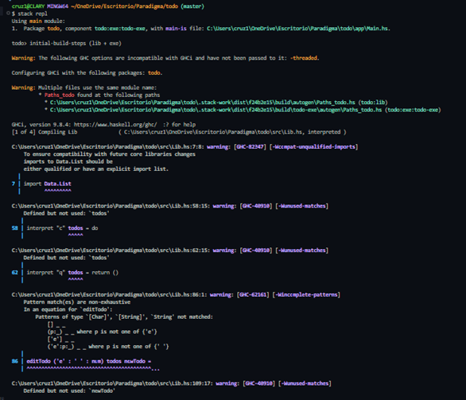
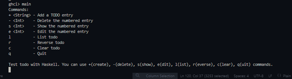
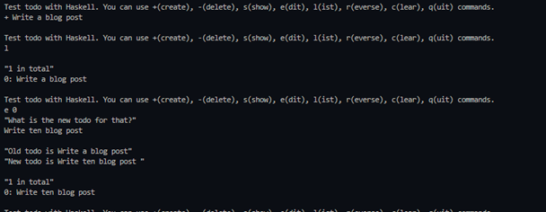
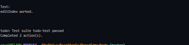

PRÁCTICA 3: APLICACIÓN EN HASKELL
FUNCIONAMIENTO DE UNA APLICACIÓN EN HASKELL

Primeramente utilizamos el comando $curl -sSL https://get.haskellstack.org/ | sh para instalar Haskell con mi computadora

Seguido de ello se ejecuto el comando stack en la consola y eso nos mostró comandos similares a este.

Para escribir una aplicación de tareas pendientes con Haskell, primero configuraremos el entorno de desarrollo de Haskell con Stack. Para ello, utilizamos el comando $stack new

Posteriormente notamos como Stack creó varios archivos, de los cuales solo nos encargaremos de app/Main.hs, src/Lib.hs, test/Spec.hs y el archivo package.yaml.

Con este comando significa que nuestro proyecto de Haskell (el código principal y la suite de pruebas) se compiló exitosamente y se ejecutó sin errores. Haskell Stack está funcionando correctamente en el sistema y ahora se puede construir el proyecto.

Con este comando confirmamos que está listo para editar nuestro proyecto y construir lo que nos pueda ser útil.
APLICACIÓN
module Main where
import Lib (prompt)
main :: IO ()
main = do
putStrLn "Commands:"
putStrLn "+ <String> - Add a TODO entry"
putStrLn "- <Int> - Delete the numbered entry"
putStrLn "s <Int> - Show the numbered entry"
putStrLn "e <Int> - Edit the numbered entry"
putStrLn "l - List todo"
putStrLn "r - Reverse todo"
putStrLn "c - Clear todo"
putStrLn "q - Quit"
prompt [] -- Start with the empty todo list.
Primero, actualizamos el Main.hs, donde podemos observar que putStrLnesta es solo para mostrar qué comandos puedes usar para esta aplicación de tareas pendientes.
module Lib
( prompt,
editIndex,
)
where
import Data.List
-- import Data.Char (digitToInt)
putTodo :: (Int, String) -> IO ()
putTodo (n, todo) = putStrLn (show n ++ ": " ++ todo)
prompt :: [String] -> IO ()
prompt todos = do
putStrLn ""
putStrLn "Test todo with Haskell. You can use +(create), -(delete), s(show), e(dit), l(ist), r(everse), c(lear), q(uit) commands."
command <- getLine
if "e" `isPrefixOf` command
then do
print "What is the new todo for that?"
newTodo <- getLine
editTodo command todos newTodo
else interpret command todos
interpret :: String -> [String] -> IO ()
interpret ('+' : ' ' : todo) todos = prompt (todo : todos) -- append todo to the empty or previous todo list [] here.
interpret ('-' : ' ' : num) todos =
case deleteOne (read num) todos of
Nothing -> do
putStrLn "No TODO entry matches the given number"
prompt todos
Just todos' -> prompt todos'
interpret ('s' : ' ' : num) todos =
case showOne (read num) todos of
Nothing -> do
putStrLn "No TODO entry matches the given number"
prompt todos
Just todo -> do
print $ num ++ ". " ++ todo
prompt todos
interpret "l" todos = do
let numberOfTodos = length todos
putStrLn ""
print $ show numberOfTodos ++ " in total"
mapM_ putTodo (zip [0 ..] todos)
prompt todos
interpret "r" todos = do
let numberOfTodos = length todos
putStrLn ""
print $ show numberOfTodos ++ " in total"
let reversedTodos = reverseTodos todos
mapM_ putTodo (zip [0 ..] reversedTodos)
prompt todos
interpret "c" todos = do
print "Clear todo list."
prompt []
interpret "q" todos = return ()
interpret command todos = do
putStrLn ("Invalid command: `" ++ command ++ "`")
prompt todos
-- Move the functions below to another file.
deleteOne :: Int -> [a] -> Maybe [a]
deleteOne 0 (_ : as) = Just as
deleteOne n (a : as) = do
as' <- deleteOne (n - 1) as
return (a : as')
deleteOne _ [] = Nothing
showOne :: Int -> [a] -> Maybe a
showOne n todos =
if (n < 0) || (n > length todos)
then Nothing
else Just (todos !! n)
editIndex :: Int -> a -> [a] -> [a]
editIndex i x xs = take i xs ++ [x] ++ drop (i + 1) xs
editTodo :: String -> [String] -> String -> IO ()
editTodo ('e' : ' ' : num) todos newTodo =
case editOne (read num) todos newTodo of
Nothing -> do
putStrLn "No TODO entry matches the given number"
prompt todos
Just todo -> do
putStrLn ""
print $ "Old todo is " ++ todo
print $ "New todo is " ++ newTodo
-- let index = head (map digitToInt num)
-- let index = read num::Int
-- print index
let newTodos = editIndex (read num :: Int) newTodo todos -- Couldn't match expected type ‘Int’ with actual type ‘[Char]
let numberOfTodos = length newTodos
putStrLn ""
print $ show numberOfTodos ++ " in total"
mapM_ putTodo (zip [0 ..] newTodos)
prompt newTodos
editOne :: Int -> [a] -> String -> Maybe a
editOne n todos newTodo =
if (n < 0) || (n > length todos)
then Nothing
else do
Just (todos !! n)
reverseTodos :: [a] -> [a]
reverseTodos xs = go xs []
where
go :: [a] -> [a] -> [a]
go [] ys = ys
go (x : xs) ys = go xs (x : ys)
La lógica principal de la aplicación se manejará con promptuna y la importaremos desde el archivo Lib.hs que editamos de la anterior manera.

Para poder comprobar cada funcion ejecutamos el comando $stack replel en la consola.

Como se visualiza en la imagen, ya podemos comprobar cada funcion de nuestra aplicación.

Primero comenzamos con el comando “+” para incluir una tarea pendiente. Luego, úsamos “l” para ver si está guardado en nuestra lista de tareas de Haskell. Después ditamos con “e 0” lo visto en la imagen y cerramos la aplicación con q o c.
import Control.Exception
import Control.Exception (assert)
import Lib (editIndex)
main :: IO ()
main = do
putStrLn "Test:"
let index = 1
let new_todo = "two"
let todos = ["Write", "a", "blog", "post"]
let new_todos = ["Write", "two", "blog", "post"]
let result = editIndex index new_todo todos == new_todos
-- assert :: Bool -> a -> a
putStrLn $ assert result "editIndex worked."
Actualizamos la prueba/Spec.hs de la anterior manera, para comprobar que la aplicación funciona.

Con este comando nuevamente vemos como Stack completó las dos acciones necesarias de compilar el proyecto y ejecutar la suite de pruebas. Además viendo el mensaje “editIndex worked.” en la terminal, sabemoss que la función editIndex se comportó exactamente como esperabamos para ese caso de prueba.
EXPLICACIÓN DE LOS CÓDIGOS DEL PROGRAMA
-
Main.hs: Este archivo app/Main.hs del proyecto Haskell, sirve como el punto de entrada principal de tu aplicación de lista de tareas. Es el archivo que se ejecuta cuando se usa stack run.
- Muestra una lista de comandos disponibles.
- Inicia el bucle interactivo de la aplicación llamando a prompt con una lista de tareas inicialmente vacía.
-
Lib.hs: Este es el módulo que contiene la mayor parte de la lógica de la aplicación de lista de tareas.
-
Funciones de Interfaz de Usuario (IO-related functions): putTodo, prompt, interpret, editTodo. Estas funciones interactúan directamente con el usuario (imprimiendo mensajes, leyendo comandos, etc.) y, por lo tanto, están dentro del contexto IO.
-
Funciones Puras de Manipulación de Listas (Pure list manipulation functions): deleteOne, showOne, editIndex, editOne, reverseTodos. Estas funciones solo toman datos de entrada y devuelven datos de salida, sin realizar ningún efecto secundario (como imprimir o leer).
-
-
Spec.hs: Este código es el contenido del archivo de prueba unitaria en Haskell, su objetivo es verificar que una función específica de la lógica de negocio (en este caso, editIndex) se comporta como se espera.
Inicio y Bucle Principal de la Aplicación
Ejecución (stack run): CStack compila el proyecto y ejecuta la función main en app/Main.hs, y lo primero que hace main es imprimir una lista de comandos (+, -, s, e, l, r, c, q) para informar al usuario sobre las funcionalidades disponibles.
Inicio del Bucle Interactivo (prompt []): Después de mostrar los comandos, main llama a la función prompt (del módulo Lib) con una lista de tareas inicialmente vacía ([]). Esta función prompt es el corazón interactivo de la aplicación, ya que imprime un mensaje de bienvenida y las opciones de comando, además, espera la entrada del usuario (getLine) y una vez que el usuario ingresa un comando, lo procesa, después de procesar el comando, prompt se llama a sí misma recursivamente con la lista de tareas actualizada, manteniendo el ciclo interactivo.
Procesamiento de Comandos (Función interpret y editTodo)
El núcleo de la lógica de procesamiento de comandos reside en la función interpret dentro de Lib.hs. Los comandos disponibles en la aplicación son:
- Añadir Tarea (+ )
- Eliminar Tarea (- )
- Mostrar Tarea (s )
- Editar Tarea (e )
- Listar Tareas (l)
- Invertir Tareas (r)
- Limpiar Tareas (c)
- Salir (q)
Funciones Puras de Manipulación de Listas
Dentro de Lib.hs, también tienes funciones que realizan operaciones en la lista de tareas de manera “pura”, como las siguientes:
- deleteOne: Implementa la lógica para eliminar un elemento en un índice específico de una lista.
- showOne: Recupera un elemento en un índice específico.
- editIndex: Reemplaza un elemento en un índice dado de una lista.
- editOne: Valida un índice y devuelve el elemento anterior en ese índice.
- reverseTodos: Invierte el orden de una lista.
Pruebas Unitarias (test/Spec.hs)
El archivo test/Spec.hs existe para garantizar la calidad y corrección del código, ya que al ejecutar stack test, este archivo se compila y ejecuta.
Changelog for todo
All notable changes to this project will be documented in this file.
The format is based on Keep a Changelog, and this project adheres to the Haskell Package Versioning Policy.
Unreleased
0.1.0.0 - YYYY-MM-DD
PRÁCTICA 3: APLICACIÓN EN HASKELL
FUNCIONAMIENTO DE UNA APLICACIÓN EN HASKELL
Primeramente utilizamos el comando $curl -sSL https://get.haskellstack.org/ | sh para instalar Haskell con mi computadora
Seguido de ello se ejecuto el comando stack en la consola y eso nos mostró comandos similares a este.
Para escribir una aplicación de tareas pendientes con Haskell, primero configuraremos el entorno de desarrollo de Haskell con Stack. Para ello, utilizamos el comando $stack new